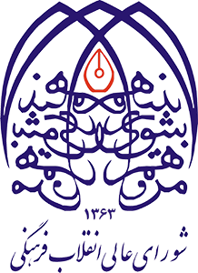

دبیرخانه شورای عالی انقلاب فرهنگی
معاونت فناوری و اقتصاد دانشبنیان
🧬 داشبورد ارزیابی اجرای سند ملی علوم و فناوریهای سلولهای بنیادی
ارزیابی وضعیت اجرای سند (۱۳۹۲–۱۴۰۱) | سامانه پایش و ارزیابی اجرای اسناد
تهیه و توسعه: دبیرخانه شورای عالی انقلاب فرهنگی – معاونت فناوری و اقتصاد دانشبنیان
📜 سیری در سند
📊 نمای کلی
🎯 اهداف کلان
🗂️ راهبردها و اقدامات
📚 کل برنامه
📋 فهرست اقدامات
📈 گزارشها
×